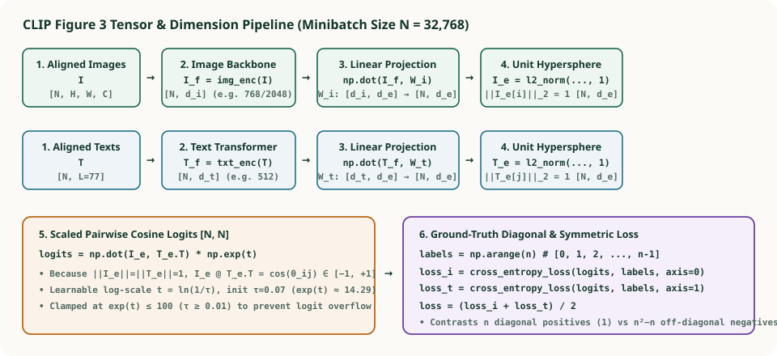
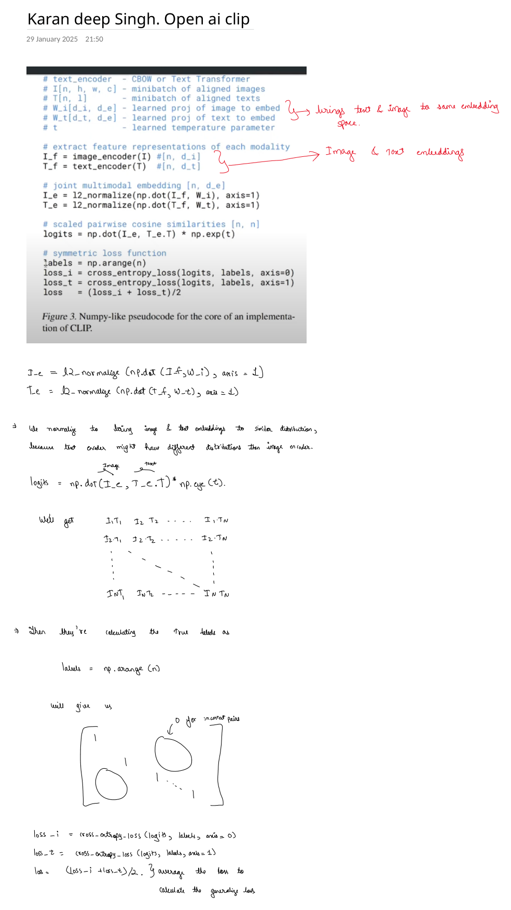

2. Inside CLIP's Figure 3 Pseudocode: Linear Projections, $\ell_2$ Hypersphere Normalization, Learnable Temperature $\exp(t)$ & Symmetric Cross-Entropy
Figure 3 of the OpenAI CLIP paper (Radford et al., 2021) is one of the most famous code snippets in modern deep learning: in just $15$ lines of NumPy-style pseudocode, it specifies the entire forward and loss computation of CLIP. Our second set of handwritten OneNote notes (from Karandeep Singh's line-by-line breakdown of OpenAI CLIP) dissects every variable, matrix multiplication, normalization axis, and cross-entropy call in Figure 3. In this chapter, we walk through those exact notes, prove why each operation is mathematically necessary, and trace a complete $3 \times 3$ numerical batch by hand.


1. The Annotated Figure 3 Pseudocode from Our Study Notes
Below is our annotated OneNote sheet showing Figure 3 from Radford et al. (2021) alongside handwritten callouts for the linear projection matrices, row-wise $\ell_2$ normalization, the $N \times N$ logit matrix, ground-truth index vector labels = np.arange(n), and the averaged bidirectional loss:


For reference, here is the exact verbatim Figure 3 pseudocode from Radford et al. (2021):
# image_encoder - ResNet or Vision Transformer
# text_encoder - CBOW or Text Transformer
# I[n, h, w, c] - minibatch of aligned images
# T[n, l] - minibatch of aligned texts
# W_i[d_i, d_e] - learned proj of image to embed
# W_t[d_t, d_e] - learned proj of text to embed
# t - learned temperature parameter
# extract feature representations of each modality
I_f = image_encoder(I) #[n, d_i]
T_f = text_encoder(T) #[n, d_t]
# joint multimodal embedding [n, d_e]
I_e = l2_normalize(np.dot(I_f, W_i), axis=1)
T_e = l2_normalize(np.dot(T_f, W_t), axis=1)
# scaled pairwise cosine similarities [n, n]
logits = np.dot(I_e, T_e.T) * np.exp(t)
# symmetric loss function
labels = np.arange(n)
loss_i = cross_entropy_loss(logits, labels, axis=0)
loss_t = cross_entropy_loss(logits, labels, axis=1)
loss = (loss_i + loss_t)/22. Line-by-Line Mathematical & Engineering Dissection
Step 1 & 2: Unaligned Modality Features (I_f, T_f) and Linear Projections (W_i, W_t)
The image encoder and text encoder are completely separate architectures with different internal widths:
- In CLIP ViT-B/32, the Vision Transformer outputs
I_fof shape $[n, d_i] = [n, 768]$, while the 12-layer Text Transformer outputsT_fof shape $[n, d_t] = [n, 512]$. - In CLIP RN50, the ResNet-50 backbone outputs $d_i = 2{,}048$ channels before projection, while the text encoder outputs $d_t = 512$.
You cannot take the dot product of a $768$-dimensional vector and a $512$-dimensional vector! As our handwritten red callout notes: W_i[d_i, d_e] and W_t[d_t, d_e] bring text and image to the same embedding space $\mathbb{R}^{d_e}$ (e.g., $d_e = 512$ for ViT-B/32 or $d_e = 768$ for ViT-L/14):
Why did OpenAI use a pure linear projection $W_i, W_t$ instead of a 2-layer non-linear MLP projection head like SimCLR and MoCo v2? Radford et al. tested non-linear MLP projection heads and found that while non-linear heads help self-supervised image-only models hide augmentation invariance quirks, in massive multimodal pre-training a simple linear projection performs identically while keeping zero-shot linear algebra clean and fast.
Step 3: Why Row-Wise $\ell_2$ Normalization (axis=1) Is Critical
I_e = l2_normalize(np.dot(I_f, W_i), axis=1)
T_e = l2_normalize(np.dot(T_f, W_t), axis=1)
In our handwritten notes, we wrote: "We normalize to bring image & text embeddings to similar distribution, because text encoder might have different distributions than image encoder." Specifically, dividing each row vector $\mathbf{u} \in \mathbb{R}^{d_e}$ by its Euclidean norm $\|\mathbf{u}\|_2 = \sqrt{\sum_{k=1}^{d_e} u_k^2}$ along axis=1 enforces two critical guarantees:
- Scale & Distribution Invariance Across Modalities: A 12-layer causal Text Transformer and a 50-layer convolutional ResNet have completely different activation variances. Projecting every row onto the unit hypersphere $\mathbb{S}^{d_e-1} = \{\mathbf{v} \in \mathbb{R}^{d_e} : \|\mathbf{v}\|_2 = 1\}$ turns the raw inner product $\mathbf{I}_e^{(i)} \cdot \mathbf{T}_e^{(j)}$ into exact cosine similarity:
$$\mathbf{I}_e^{(i)} \cdot \mathbf{T}_e^{(j)} = \frac{\mathbf{u}_i^\top \mathbf{v}_j}{\|\mathbf{u}_i\|_2\,\|\mathbf{v}_j\|_2} = \cos(\theta_{ij}) \in [-1, +1].$$
- Preventing the Norm-Explosion Shortcut: In cross-entropy loss, if embeddings were unnormalized, the optimizer could drive the cross-entropy loss toward zero simply by multiplying $W_i$ and $W_t$ by $100\times$ without improving the angular alignment $\theta_{ij}$ between matched pairs! Bounding $\cos(\theta_{ij}) \in [-1, 1]$ forces all learning into the angles between vectors, while delegating logit sharpness to a single controlled scalar $\exp(t)$.
Step 4: Scaled Pairwise Cosine Similarities & Learnable Log-Temperature t
logits = np.dot(I_e, T_e.T) * np.exp(t)
Why is np.dot(I_e, T_e.T) multiplied by np.exp(t)?
- Suppose $\cos(\theta_{ii}) = +0.85$ for a true pair and $\cos(\theta_{ij}) = -0.10$ for $32{,}767$ negative pairs. If we fed raw cosine values $\in [-1, 1]$ directly into softmax without temperature scaling ($\exp(t) = 1$), the maximum possible probability assigned to the true positive in a batch of $N = 32{,}768$ would be:
$$P_{ii} = \frac{e^{0.85}}{e^{0.85} + 32767 \cdot e^{-0.10}} \approx \frac{2.34}{2.34 + 29648.7} \approx 0.000079 \;\;(\mathcal{L} \approx 9.45\text{ nats})!$$Even a perfect embedding model ($\cos = 1.0$ vs. $-1.0$) could never reach high confidence across $32{,}768$ classes if logits are restricted to $[-1, +1]$!
- Parameterized as Log-Scale $t = \ln(1/\tau)$: Instead of tuning $\tau$ via expensive hyperparameter sweeps, CLIP makes $t = \ln(1/\tau)$ a learnable scalar parameter updated directly by gradient descent, initialized to $\tau_0 = 0.07 \implies t_0 = \ln(1/0.07) \approx 2.6593$ ($\exp(t_0) \approx 14.286$) and clamped at $\exp(t) \le 100$ ($\tau \ge 0.01$, $t \le \ln 100 \approx 4.6052$) to prevent numerical instability early in training.
Step 5: Why labels = np.arange(n) and Why Average axis=0 & axis=1?
labels = np.arange(n)
loss_i = cross_entropy_loss(logits, labels, axis=0)
loss_t = cross_entropy_loss(logits, labels, axis=1)
loss = (loss_i + loss_t)/2Look at the diagram at the bottom of our handwritten OneNote sheet (Figure 2):
- In the $n \times n$ matrix
logits, row $k$ is Image $k$ and column $k$ is its true paired Text $k$. Therefore, for row $0$, the correct class index is column $0$; for row $1$, the correct class index is column $1$; and for row $k$, the correct class index is $k$. - Passing
labels = np.arange(n) = [0, 1, 2, ..., n-1]into multi-class cross-entropy is equivalent to a one-hot target matrix equal to the identity matrix $\mathbf{I}_n = \operatorname{diag}(1, 1, \dots, 1)$, where the diagonal entries are $1$ (matched pairs) and all $n(n-1)$ off-diagonal circles in our OneNote sketch are $0$ (mismatched pairs). - Symmetrizing over both axes: Cross-entropy normalized along rows evaluates Image-to-Text retrieval ($\mathcal{L}_{I \to T}$), while cross-entropy normalized along columns (or equivalently over $\text{logits}^\top$) evaluates Text-to-Image retrieval ($\mathcal{L}_{T \to I}$). Averaging $\mathcal{L} = (\text{loss\_i} + \text{loss\_t}) / 2$ ensures the joint space is symmetric for both directions.
3. Complete Worked $3 \times 3$ Numerical Batch Trace
Let $n = 3$, embedding dimension $d_e = 2$, and learned temperature scale $\exp(t) = 10.0$ ($\tau = 0.10$). Suppose after linear projection and row-wise $\ell_2$ normalization, our unit embeddings are:
Multiplying $\mathbf{S} = \mathbf{I}_e \mathbf{T}_e^\top$ and scaling by $\exp(t) = 10.0$ yields the $3 \times 3$ logit matrix:
| Index $k$ | Ground-Truth Target | Row Logits $\text{logits}[k, :]$ ($I_k \to T$) | Row Softmax $P(T_k \mid I_k)$ & NLL | Col Logits $\text{logits}[:, k]$ ($T_k \to I$) | Col Softmax $P(I_k \mid T_k)$ & NLL |
|---|---|---|---|---|---|
| $k = 0$ | labels[0] = 0 |
$[+9.60,\; +2.80,\; -8.00]$ | $P_{00} = 0.9989,\; -\ln P_{00} = \mathbf{0.0011}$ | $[+9.60,\; +2.80,\; -8.00]^\top$ | $P_{00} = 0.9989,\; -\ln P_{00} = \mathbf{0.0011}$ |
| $k = 1$ | labels[1] = 1 |
$[+2.80,\; +9.60,\; -6.00]$ | $P_{11} = 0.9989,\; -\ln P_{11} = \mathbf{0.0011}$ | $[+2.80,\; +9.60,\; -9.36]^\top$ | $P_{11} = 0.9989,\; -\ln P_{11} = \mathbf{0.0011}$ |
| $k = 2$ | labels[2] = 2 |
$[-8.00,\; -9.36,\; +9.60]$ | $P_{22} \approx 1.0000,\; -\ln P_{22} = \mathbf{0.0000}$ | $[-8.00,\; -6.00,\; +9.60]^\top$ | $P_{22} \approx 1.0000,\; -\ln P_{22} = \mathbf{0.0000}$ |
4. Complete Runnable NumPy & PyTorch Implementation of Figure 3
import numpy as np
def l2_normalize(x: np.ndarray, axis: int = 1, eps: float = 1e-12) -> np.ndarray:
norm = np.linalg.norm(x, ord=2, axis=axis, keepdims=True)
return x / np.maximum(norm, eps)
def cross_entropy_loss(logits: np.ndarray, labels: np.ndarray, axis: int = 1) -> float:
"""Numerically stable log-softmax + NLL along the specified class axis."""
if axis == 0:
logits = logits.T # transpose so classes are along axis=1 (columns)
shifted = logits - np.max(logits, axis=1, keepdims=True)
log_probs = shifted - np.log(np.sum(np.exp(shifted), axis=1, keepdims=True))
n = logits.shape[0]
return float(-np.mean(log_probs[np.arange(n), labels]))
# Verify our 3x3 worked numerical trace
I_e = np.array([[1.0, 0.0], [0.0, 1.0], [-0.6, -0.8]])
T_e = np.array([[0.96, 0.28], [0.28, 0.96], [-0.8, -0.6]])
t = np.log(10.0) # exp(t) = 10.0
# Clamping log-temperature as in official OpenAI CLIP: exp(t) <= 100
t_clamped = np.minimum(t, np.log(100.0))
logits = np.dot(I_e, T_e.T) * np.exp(t_clamped)
labels = np.arange(len(I_e))
loss_i = cross_entropy_loss(logits, labels, axis=0)
loss_t = cross_entropy_loss(logits, labels, axis=1)
loss = (loss_i + loss_t) / 2.0
print("Logits matrix:\n", np.round(logits, 2))
print(f"loss_i = {loss_i:.6f}, loss_t = {loss_t:.6f}, symmetric loss = {loss:.6f}")
assert round(loss, 4) == 0.0007